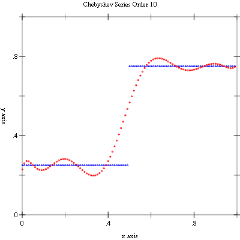
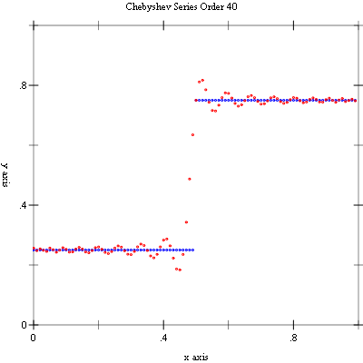

11 Chebyshev Approximations
This chapter describes the routines for computing Chebyshev approximations to univariate functions provided by the Science Collection. A Chebyshev approximation is a truncation of the series,
where the Chebyshev polynomials Tn(x) = cos(n arccos x) provides an orthogonal basis of polynomials in the interval [-1, 1] with the weight function 1/(1 - x2)½. The first few Chebyshev polynomials are T0(x) = 1, T1(x) = x, T2(x) = 2x2 -1. For more information, see Abramowitz and Stegun [Abramowitz64], Chapter 22.
The functions described in this chapter are defined in the "chebyshev.rkt" file in the Science Collection and are made available using the form:
| (require (planet williams/science/chebyshev)) |
11.1 The chebyshev-series Structure
A Chebyshev series is represented by a structure chebyshev-series that has the following fields:
coefficients—
a vector of length order containing the coefficients for the Chebyshev series. order—
the order of the Chebyshev series. lower—
the lower bound on the interval over which the Chebyshev series is defined. upper—
the upper bound on the interval over which the Chebyshev series is defined.
The approximations are made over the range [lower, upper] using order + 1 terms, including coefficient0. The series is computed using the following convention:
which is needed when accessing the coefficients directly.
11.2 Creation and Calculation of Chebyshev Series
procedure
(chebyshev-series? x) → boolean?
x : any/c
procedure
(make-chebyshev-series order) → chebyshev-series?
order : exact-nonnegative-integer?
(make-chebyshev-series coeffs-or-func order lower upper) → chebyshev-series? coeffs-or-func : (or/c (vectorof real?) (-> real? real?)) order : exact-nonnegative-integer? lower : real? upper : real?
procedure
(make-chebyshev-series-order order) → chebyshev-series?
order : exact-nonnegative-integer?
procedure
(chebyshev-series-coefficients cs) → (vectorof real?)
cs : chebyshev-series?
procedure
cs : chebyshev-series?
procedure
(chebyshev-series-lower cs) → real?
cs : chebyshev-series?
procedure
(chebyshev-series-upper cs) → real?
cs : chebyshev-series?
procedure
(chebyshev-series-init cs func a b) → void?
cs : chebyshev-series? func : (-> real? real?) a : real? b : (>/c a)
11.3 Chebyshev Series Evaluations
procedure
(chebyshev-eval cs x) → real?
cs : chebyshev-series? x : real?
procedure
(chebyshev-eval-n cs n x) → real?
cs : chebyshev-series? n : exact-nonnegative-integer? x : real?
11.4 Derivatives and Integrals
The following functions allow a Chebyshev series to be differentiated or integrated, producing a new Chebyshev series.
procedure
(make-chebyshev-series-derivative series) → chebyshev-series?
series : chebyshev-series?
procedure
(make-chebyshev-series-integral series) → chebyshev-series?
series : chebyshev-series?
11.5 Chebyshev Approximation Examples
Example: The following program computes Chebyshev approximations to a step function. This is an extremely difficult approximation to make due to the discontinuity and was chosen as an example where approximation error is visible. For smooth functions the Chebyshev approximation converges extremely rapidly and errors would not be visible.
#lang racket (require (planet williams/science/chebyshev)) (require plot/plot) (define (f x) (if (< x 0.5) 0.25 0.75)) (define (chebyshev-example n) (let ((cs (make-chebyshev-series-order 40)) (y-values '()) (y-cs-10-values '()) (y-cs-40-values '())) (chebyshev-series-init cs f 0.0 1.0) (for ((i (in-range n))) (let* ((x (exact->inexact (/ i n))) (y (f x)) (y-cs-10 (chebyshev-eval-n cs 10 x)) (y-cs-40 (chebyshev-eval cs x))) (set! y-values (cons (vector x y) y-values)) (set! y-cs-10-values (cons (vector x y-cs-10) y-cs-10-values)) (set! y-cs-40-values (cons (vector x y-cs-40) y-cs-40-values)))) (printf "~a~n" (plot (mix (points y-values) (points y-cs-10-values)) #:x-min 0 #:x-max 1 #:y-min 0 #:y-max 1 #:title "Chebyshev Series Order 10")) (printf "~a~n" (plot (mix (points y-values) (points y-cs-40-values)) #:x-min 0 #:x-max 1 #:y-min 0 #:y-max 1 #:title "Chebyshev Series Order 40")))) (chebyshev-example 100)
The following figures show the resulting plots.

